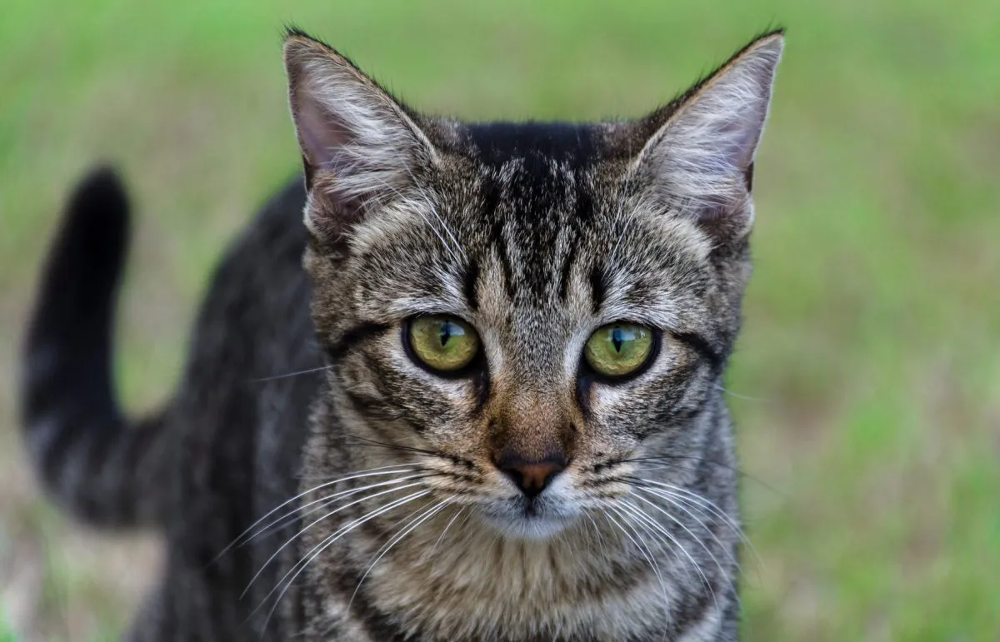
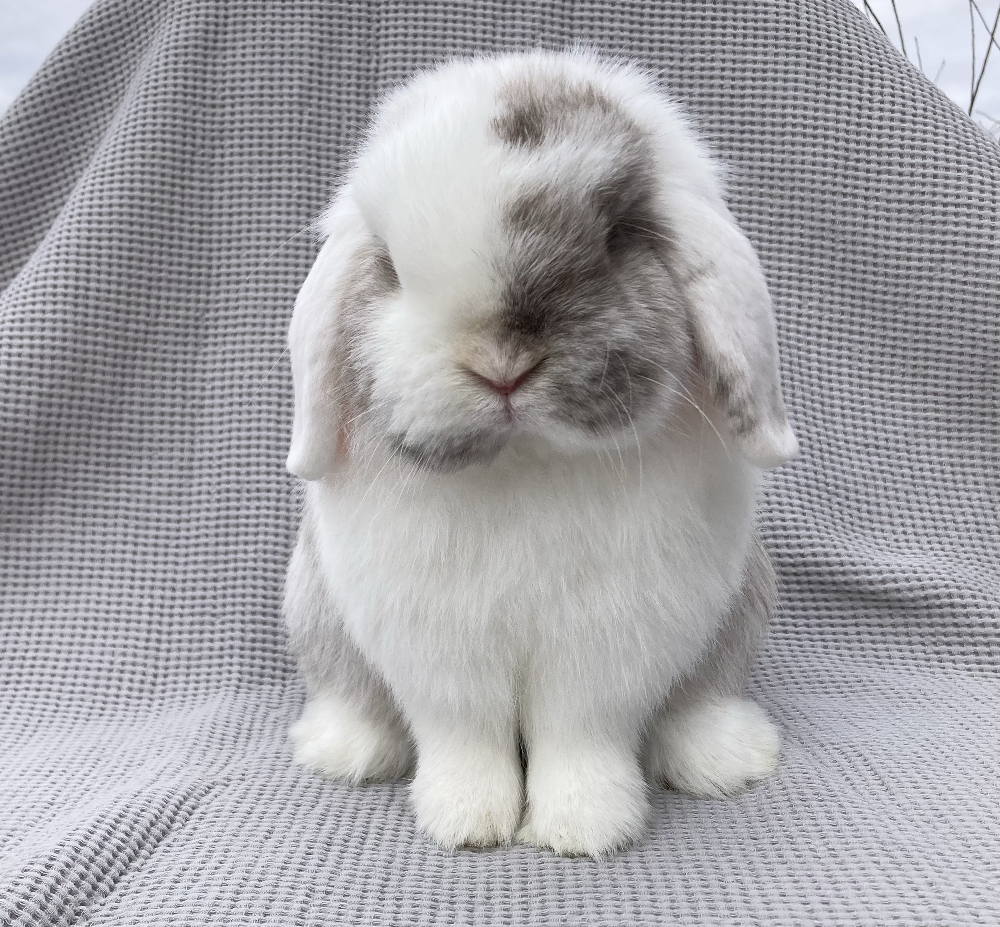
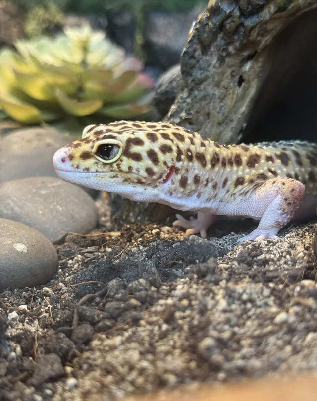
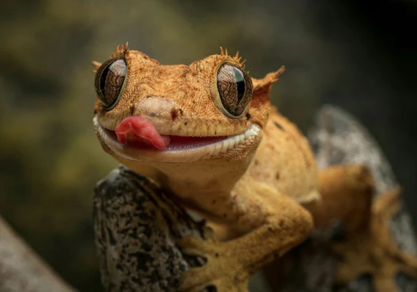

Popular Pet Breeds
British Shorthair
Quiet, friendly, and easygoing cats.

Chinese Domestic Cat
Smart, independent, and adaptable cats commonly found in China.

Samoyed
Friendly, fluffy, and energetic dogs with a smiling face.
Golden Retriever
Loyal, gentle, and intelligent dogs that are great with families.

Holland Lop
Cute rabbits with floppy ears and a gentle personality.

Flemish Giant
Large and calm rabbits that are known for their gentle nature.

Leopard Gecko
Small reptiles with spotted skin and a calm personality.

Crested Gecko
Cute climbing geckos with soft skin and big eyes.